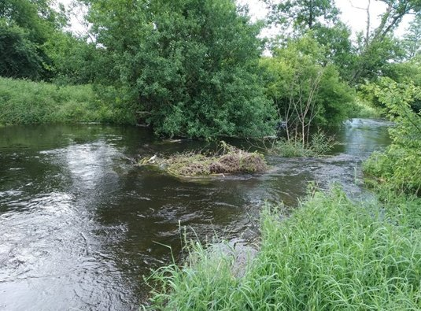
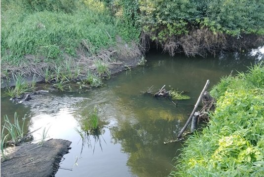
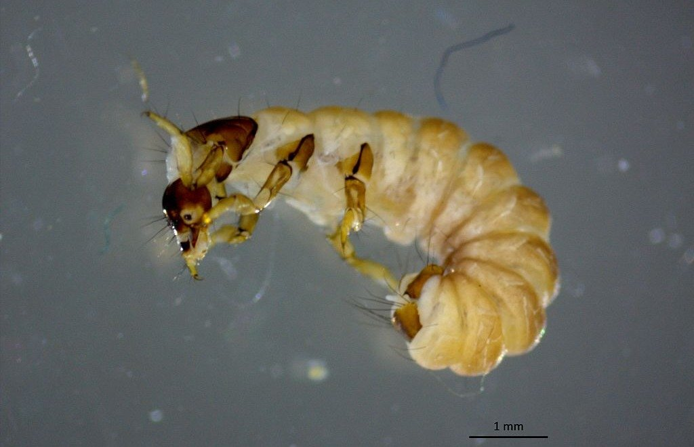
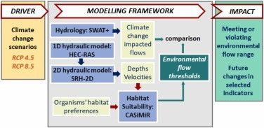

Research
Rivers in semi-arid regions swing between floods and drying. We study how climate and people are shifting those swings, and what that means for the life rivers support and the work they do.
Guiding questions
- How do climatic extremes and human water use alter river flow regimes, from floods to low flows and drying, and what does that mean for water security and environmental flows?
- How do changes in flow, intermittency and connectivity shape freshwater biodiversity and the ecological functions of streams?
- How can we bring hydrology, ecology and modelling together to help agencies, water managers and communities keep rivers resilient to extremes and human alteration?
From flow to habitat
We follow changes in river flow through to the habitat and organisms that depend on it.




Approach
We combine empirical work in the field with modelling.
- FieldHydrological, water-quality and biodiversity observations, including environmental DNA
- DataLong-term records from national and global streamflow and climate networks
- ModelsWatershed and habitat models, such as SWAT+ and hydraulic–habitat models
- AnalysisStatistical and data-driven methods
Where we work
Our field research centers on rivers of the Texas Hill Country and Edwards Plateau. Earlier work took the group to lowland rivers in Poland, river basins in southern India, and watersheds in Kentucky and North Carolina.
Collaborations
We work with colleagues at Texas State University and research groups across the United States and Europe, including long-running collaborations on environmental flows and catchment modelling with Warsaw University of Life Sciences, Poland.